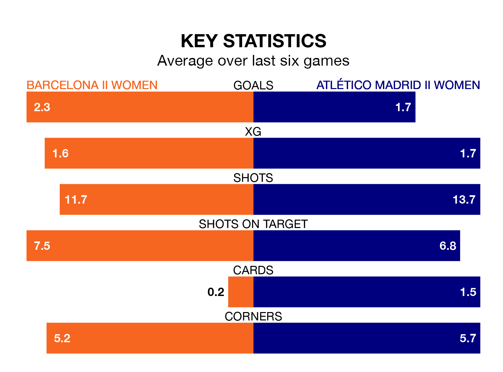

Barcelona II Women host Atlético Madrid II Women on Sunday on the back of five consecutive wins in the Primera Federación Femenina.
Barcelona II have picked up 15 points from their last six games, and they face an Atlético Madrid II side who also won their last match, and have collected eight points from the last possible 18.
With 32 goals in 17 games so far this season, Barcelona II are the league's joint-highest scorers with 1.9 goals per game. And they are conceding fewer than average, letting in 13 goals at a rate of 0.8 per game.
Atlético Madrid II are also above average scorers, with 1.3 goals per game, compared to a league average of 1.2. They have conceded 1.2 goals per game.
The hosts are second in the table after 17 games, of which they have won 12 and drawn one, earning 37 points.
The away team are seven places behind Barcelona II in ninth, with six wins and four draws putting them on 22 points.
Barcelona II's last match was on February 4, a 1-0 win against Deportivo Alavés Women, with getting the goal for Barcelona II.
Atlético Madrid II beat Cacereño Women 2-0 last time out, on February 3, with on the scoresheet.
Updated: 11:18 (UTC), 08/02/24